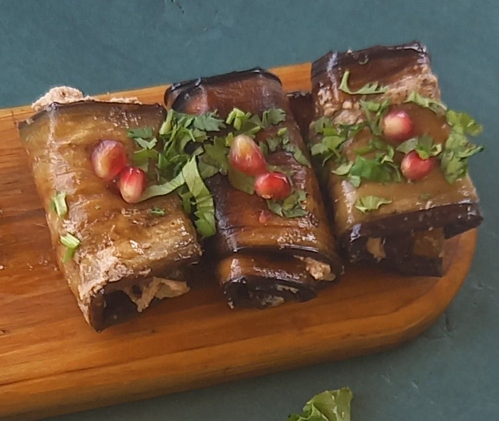

Georgian eggplant walnut rolls
Nigvziani badrijani — an appetiser I discovered in Mestia and have been perfecting ever since.

I first tried this dish in Mestia, made by my host when I was travelling through Georgia. It was served as an appetiser before almost every meal, alongside cheese, bread and whatever else was cooked on that day. It pairs perfectly with a dark Georgian wine and Khachapuri.
The walnut paste is the centre of the dish. Once you have it right, the eggplant is just enhancing the flavours of the delicious walnut paste. In case you have leftover paste, it is delicious on bread as well. The recipe below makes around twenty rolls.
Ingredients
- 4 medium eggplants
- 250g walnuts
- 2 garlic cloves
- 1 teaspoon Khmeli Suneli (see below how to make it)
- 1 tablespoon vinegar (or lemon/lime juice or dry white wine)
- ½ teaspoon ground coriander
- ¼ red onion, finely chopped
- Olive oil
- Pomegranate seeds, for serving
- Warm water (or pomegranate juice or molasses)
- Salt and pepper
Optional, for a spicy version: ½ green chilli pepper, finely chopped.
To make Khmeli Suneli from scratch: 1 teaspoon of each fenugreek, fresh coriander, parsley, dill, mint, 3 bay leaves and ½ teaspoon spicy paprika powder.
Method
- Preheat the oven to 180°C.
- Slice the eggplants lengthways into thin slices, under 1cm each.
- Brush the slices with olive oil and bake for 25 minutes until soft, flipping halfway through. You can also barbecue or pan-fry them.
- While the eggplant cooks, roast the walnuts in a dry pan until fragrant. Let them cool.
- Add the walnuts to a food blender with the Khmeli Suneli, ground coriander, garlic, vinegar, chopped onion, chilli (if using), salt and pepper.
- Blend until smooth, adding a little warm water (or pomegranate juice) as needed to reach a creamy and spreadable consistency.
- Taste and adjust with more salt, vinegar or water until the paste is balanced.
- When the eggplant slices have cooled, spread one to two tablespoons of walnut paste on the short rounded edge of each slice, then roll them up.
- Place the rolls seam-side down on a serving plate.
- Serve at room temperature, sprinkled with pomegranate seeds.